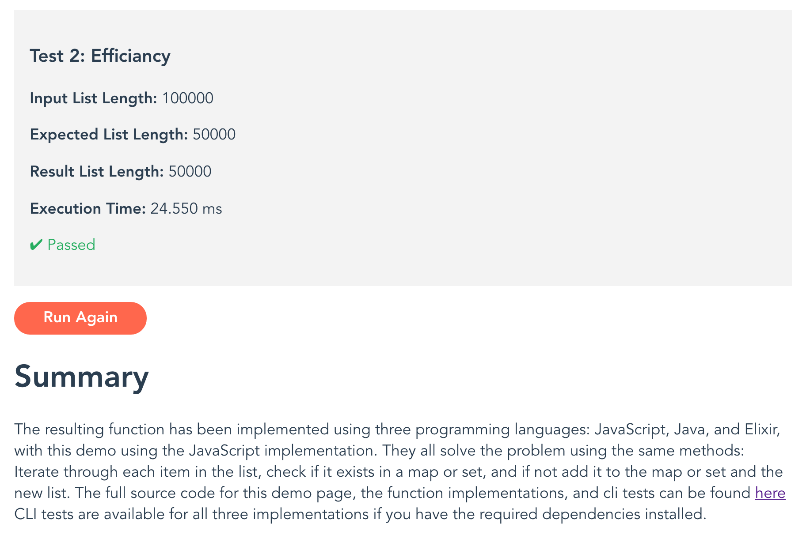
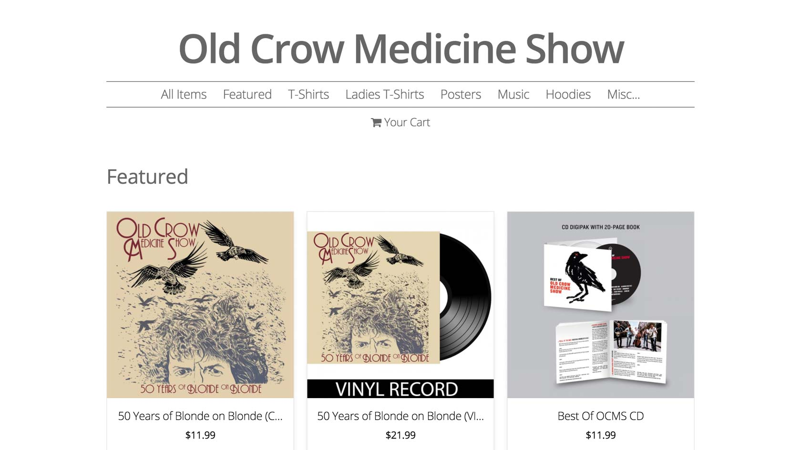
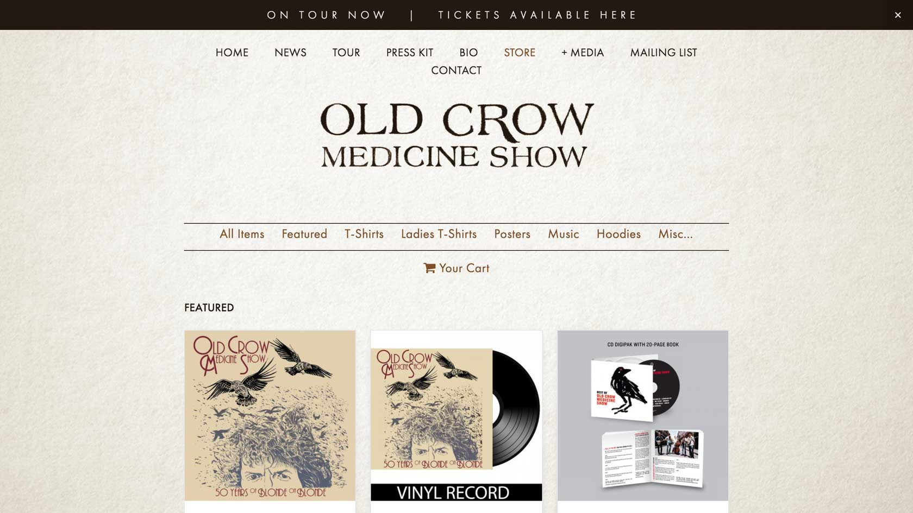
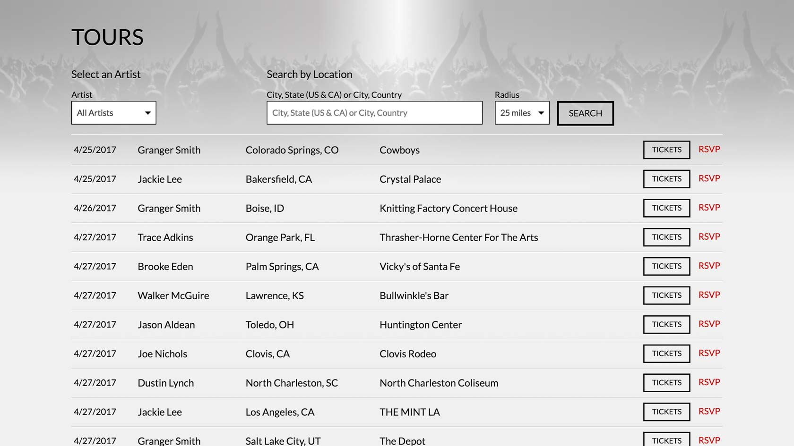
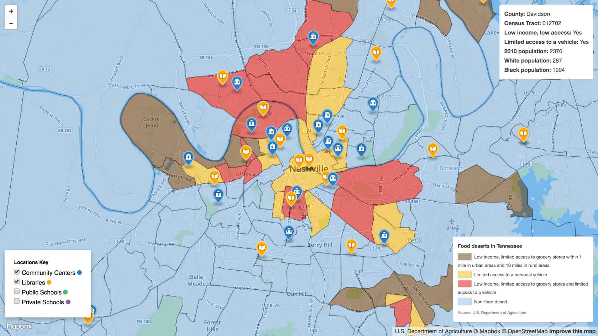
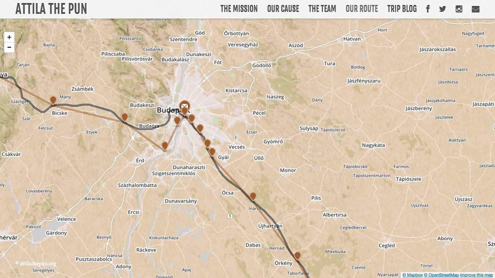
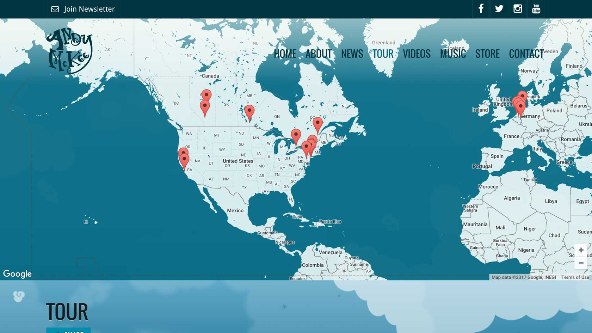

Miscellaneous
Unique Set Demo
The dreaded interview coding project is a very real thing that most developers will face at somepoint in their careers. You never quite know what's really expected of you and preparing for them is sometimes difficult. The Unique set demo was one of the more interesting projects I was asked to complete for a full stack developer position. It required you to provide a web based GUI for a relatively simple coding challange, completed in at least 2 languages of your choice, and to explain why solved the problem the way you did. To take it a little further, write automated tests and deploy the application so that it could be viewed by the team. Surpisingly, I actually enjoyed putting this small project together. It gave me a lot of freedom to solve a problem using tools I was familiar with and show of a little bit of everything. I deployed my version on Vercel though it could have just as easily been deployed on Github pages.
Checkout my unique set demo and peruse, fork, or clone the code.

Highlights
This project reminded me of the value of my Computer Science degree. When you've been deep in the throes of some framework it's easy to overlook how time complexity can impact the results of your solution.
Tags
JavaScript, Java, Elixir, Data Structures, Algorithms, Node, Vue, PostCss
CSS
I was fortunate that my self-learning started with responsive design. I actually find it difficult to constrain myself to static widths and use mobile first concepts not just to create user friendly sites, but to better understand the heirachy of content organization.
Simple CSS Grid
An oldie but a goodie. When I first realized the benefits of PostCSS-cssnext, and had ultimately favored it over SASS and LESS, the first thing I deployed was a simplified grid. The goal of the library was to allow the grid options to be adjusted for a given project through the manipulation of a few variables. One of the major benefits is the ability to change the selectors used for rows and columns, saving you from changing the markup.
I've since moved to flexbox grids since they are superior in many ways, and mostly leverage Milligram for a battery powered CSS reset, where I do my best to contribute to the PostCSS-cssnext version of the framework.
/*Gutters*/
--gridGutterSizeMobile: 0.9375rem; /*15px gutters*/
/*Media Query*/
@custom-media --view-grid-wide ( width > 1680px );
/*Row class*/
@custom-selector :--row .row;
<div class="row">
<div class="col-8 pull"></div>
<div class="col-2"></div>
</div>
Highlights
I've always felt that most grid systems over employ the requirement of the "container" class, so I removed it entirely from this library. The result is a simpler markup for creating the grid.
Tags
CSS, PostCSS, cssnext, responsive
JavaScript
Like many developers before me, I found jQuery to be incredibly helpful, but today's options with Node, NPM, and ES2015 have pushed JavaScript development to the forefront of my mind, making it an area of heavy focus.
Missingink Store Drop In
Missingink Shop has been hosting custom themed storefronts for its clients for years, but one question always stuck, how do I put the store on my website? Realizing the benefits of reduced overhead in maintaining custom store themes, as well as easing the burden on the servers, we developed a platform that allows Missingink's clients to drop their store right into their sites. I collaborated on the design of the API, and created a JavaScript application in Vanilla JavaScript that makes it as easy as a copy and paste to embed a store in a website.
As a companion application, I created a snippet builder that makes it easy for clients to create a snippet with a few custom options for setting various styles and a live preview.


<script
src="//assets.missingink.com/js/mi-js-store/mistore.min.js"
data-mistore="crowmedicine"
data-useNavigation="true"
data-organizeByCategory="true"
data-buttonBackgroundColor="#6A451F"
data-buttonTextColor="#FFF3E6"
></script>
Highlights
Writing the store drop in with Vanilla JavaScript was an additional challenge that I felt was absolutely necessary since I was keen on avoiding dumping duplicate libraries on sites. The availability of this JavaScript has made it very simple for default stores to exist, when a client doesn't have a website of their own. Additionally, while the snippet has a handle full of options for colors and features it can also inherit a site's styles or be completely restyled with custom CSS.
Tags
JavaScript, PostCSS, cssnext, UI, Design, Responsive, Vue.js
BandsInTown API Wrapper
Working in Nashville for many years has meant working heavily in the music industry, with tour date listings always being a top priority. Widgets are great when you need something fast and can overlook their all too common inability to integrate well with a site, but what's the point when you can get custom markup and then apply your styles by tapping into an API. I wrote a simple but effective wrapper for the BandsInTown API that lets me quickly call for data and apply to a template. John Resig's micro template has always been a favorite choice for lightweight deployments.

Highlights
One of the best features of this wrapper is the ease in which you can call for data on multiple artists. That allowed me to quickly create a tour date listing for all of Broken Bow Records Music Groups artists in one filterable list.
Tags
Lorem, Ipsum
Mapping API Usage
Mapping API's create so many possibilities for developers. You can collect locations, display polygons or various zone and verify that a location exists within that polygon, provide users with directions, and so much more. Plus, the interpolation of data sets into custom styled Maps is not only fun, it's a great way to visualize data.
Nashville Food Deserts
The Local Collaborative wants to make locally grown and produced goods available to everyone, especially to those who live in areas with limited access to grocers and transportation. We've been working on a partnership with Community Centers, Libraries, and Public and Private Schools as potential pick up locations, specifically in food deserts. Since accepting SNAP benefits online is still unavailable, the hope is we can handle SNAP transactions at affiliate pick up locations. In order to really understand the viability of such an idea, we populated a map of the Nashville area with potential pickup locations and the USDA's data on food deserts.

Highlights
This project required a quick turn around, but using an existing Mapbox map of the USDA's data set, I was able to rapidly add the location data set. In addition to the mapping I wrote a few small JavaScript snippets to run through the Chrome Developer Tools console to quickly gather and format the data I needed.
Tags
Mapbox, JavaScript, Chrome Developer Tools
Attila The Pun Mongol Rally Route Progress
When your friends electively decide to drive across some of the most difficult terrain spanning Europe and Asia, in a vehicle specifically not designed to handle it, you want to keep tabs on their progress. Using the data from a GPS tracking device, I created a custom map that displayed their planned route and actual route.

Highlights
Tags
Mapbox, JavaScript, Geo Location
Andy McKee Tour Dates
Andy McKee plays all over the world, so when he wanted a tour dates listing, I immediately thought we should map it out.

Highlights
BandsInTown already provided me with Latitude and Longitude so placing markers on a map was a simple process. While it's no longer available, this map at one time displayed past tour dates as well. Once again in the CMS I used Geo Location services from the Google Maps API to get Latitude and Longitude information for various locations throughout the world.
Tags
Google Maps API, JavaScript